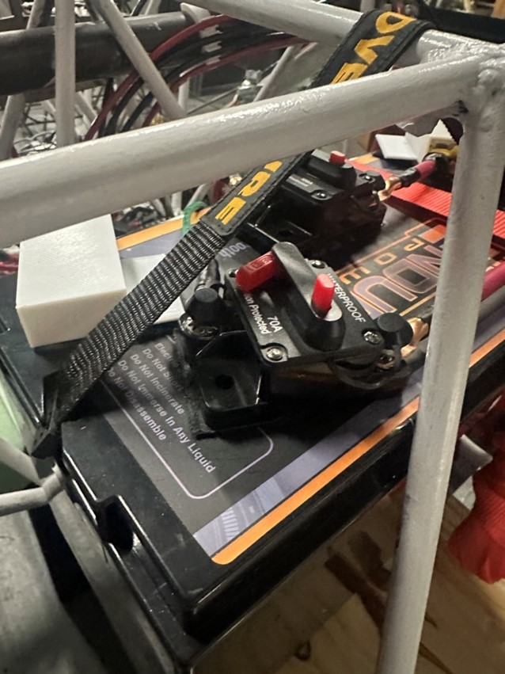
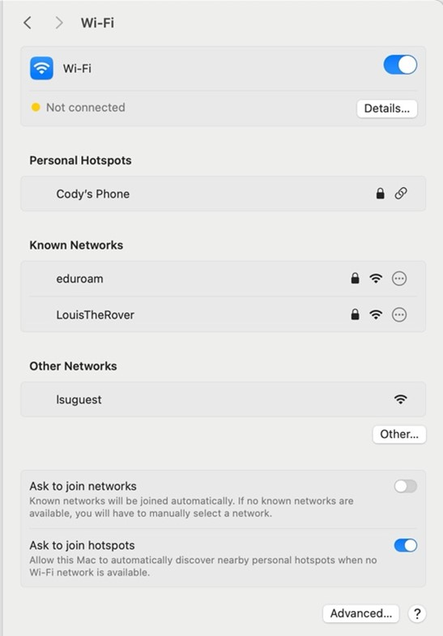
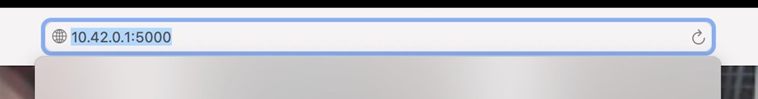
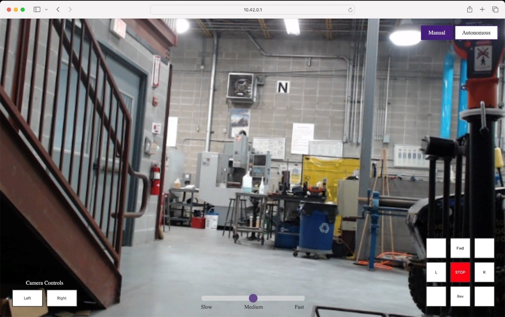
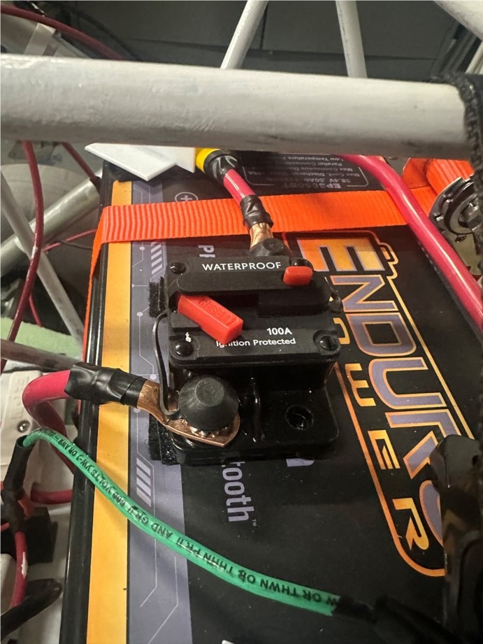

How to Work LOUIS
The following guide will help you operate and understand LOUIS.
Step 1: Power On LOUIS
On top of the battery, there are two switches. Turn on the switch with the green wire to start.
Step 2: Connect to LouisTheRover
On your controller device of choice, open the wi-fi settings, connect to LouisTheRover, and type in the password (Password:LouisLSU).
Step 3: Type in the IP Address
On your browser of choice, navigate to the IP address port 5000 of the Jetson Nano, which is 10.42.0.1:5000
Step 4: Confirm Live Camera Feed
You should see the controller GUI and have a live camera feed as shown.
Step 5: Toggle the Second Switch
Then, you can toggle the second switch on the battery, and LOUIS is ready to control!